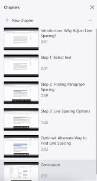
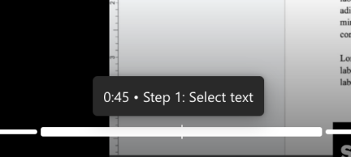
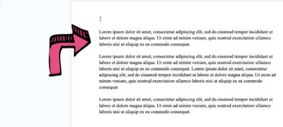

Tips for Digital Accessibility
Alongside principles to consider when creating an accessible video, there are design tips. Consider the stylistic and content tips below to accommodate the needs of your audience.
Duration and Length
Length is relevant due to limited attention spans of users; consider portions of a video that might be slow or can be removed.
Try to:
-
Keep instructional videos under 5 minutes.
-
This is due to short attention spans.
-
-
Try recording a test run first to establish video length. If it’s over 5 minutes, identify steps that can be condensed or cut entirely.
-
Split a longer video into a shortened video series.
Chunking and Chapters
Breaking content into a manageable portion of a larger body of writing can help users consume content quicker and more effectively.
Try to:
-
Break section of video into segments rather than one continuous take
-
ClipChamp allows you to split clips and organize sequentially
-
Add chapters to aid viewer navigation throughout the video
-
It can create distinction between steps and tasks
-
-
Chapters Example:

Working Memory and Attention
Similar to the chunking and chapters, information is sometimes more easily consumed when broken up into smaller sections. Try to decisively break up steps while verbalizing all actions (1).
-
Don’t be afraid to pause and speak slowly.
-
This will give people time to absorb the information and follow along.
-
-
Try to say what the task is and what you’re about to show, before going through the process.
-
“Now I'll click the Export button in the top right corner.”
-
This primes the viewer's attention before the action happens on screen.
-
-
-
In tutorial style videos, avoid multitasking
-
It’s hard to follow multiple tasks at once or in quick succession.
-
Break up tasks, and steps within them
-
Example:
-
Don’t: only say copy and paste a piece of text
-
Do: break it down to three steps; show how to select, copy, and then paste the text.
-
-
Skimmable Content
Having a video or task that has broken down information makes it much less strenuous to consume. Long monologues in videos, or long paragraphs of text, become monotonous and hard to focus on.
-
Structure a video to allow viewers to jump around.
-
Use on-screen labels and reiterate spoken instructions.
-
Try to keep the visual aspects consistent throughout.
-
-
Have each chunk be able to stand alone.
-
This allows viewers to stay oriented regardless of previous knowledge.
-
Skimmability Example:
Dividing up a video into chapters is a good example of aiding skimmability. Below is an example of effective chunking.

On-Screen Markup
On-Screen Markup can significantly help individuals see what tiny button they have to press. Labels, zooming in, and highlighting are all common ways to highlight important parts of a step.
-
Use ClipChamp’s text and annotation tools to highlight key areas of the screen, label buttons, and callouts.
-
Annotation can support viewers with hearing or vision difficulties
-
Ex.: when clicking a small button, add a text label or arrow so that its location and label is clearer
-
Example of Annotation:

Works Cited:
-
(WAI), W3C Web Accessibility Initiative. “Making Audio and Video Media Accessible.” Web Accessibility Initiative (WAI), www.w3.org/WAI/media/av/. Accessed 12 Mar. 2026.
GenAI Statement: no AI platforms were used in the creation of this content